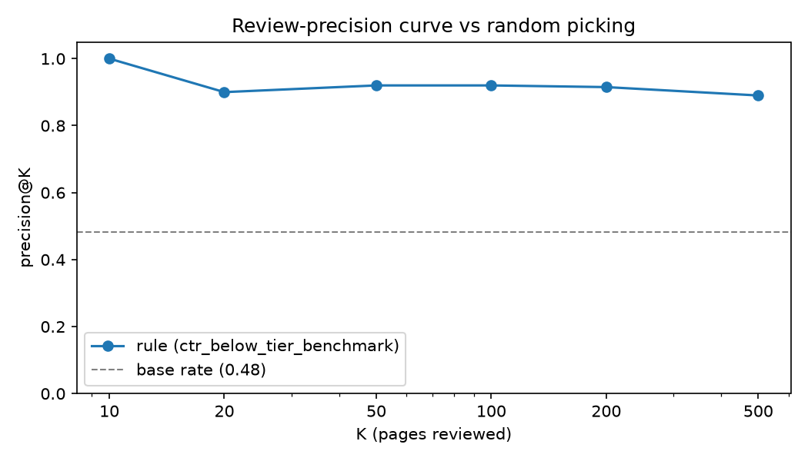
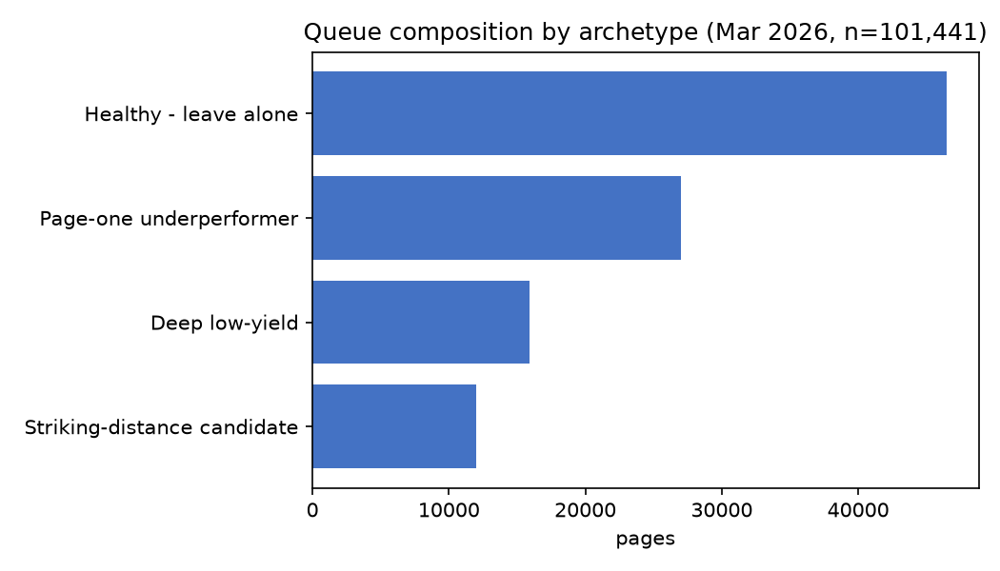
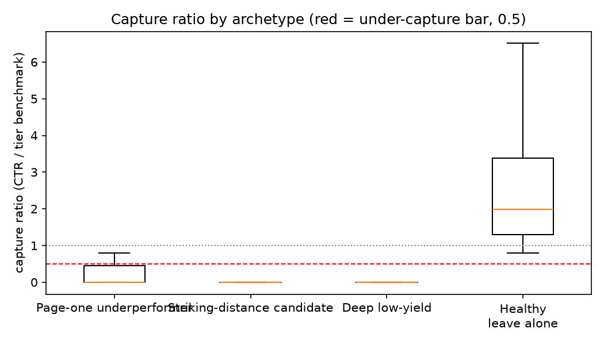

Which pages deserve review first?
A validated CTR-opportunity queue built on production search data
Abstract. Content teams can review only a handful of pages a week, so the real question is not "which pages are weak?" but which pages to open first. Using FlyRank's internship warehouse — about 79 million daily search-performance rows covering one pseudonymized portfolio — I built a page-month panel of 101,441 visible pages (March 2026) and asked which ones would under-capture their position tier's click-through rate the following month. A transparent hand rule — how far a page sits below its position-tier benchmark CTR, weighted by visibility — ranked the queue at Precision@50 of 0.92 against a 0.48 base rate, and a cross-validated logistic regression measured equal (0.952 ± 0.033), so the simpler rule shipped. The validation design (client-grouped splits, a planted-leak harness, a memorization audit comparing naive and grouped splits) is reported alongside every number, and the known limits — 12.8% survivorship, saturated precision, one month pair — bound what the results can claim. The output is a human-reviewed action playbook with reason codes, no-go rules, and monitoring triggers, deployed here as decision-support rather than automation.
Introduction / Problem statement
A content analyst opens perhaps ten to fifty pages a week. Every hour spent on a page that never had upside is an hour not spent on one that did. FlyRank's product already surfaces candidate pages through hand-written flags — quick-win tags, needs-attention markers — chosen by experienced judgment and honest thresholds. The question this paper takes on is whether such a rule can be put on measured ground: does "capture far less CTR than your position tier predicts" actually identify next month's under-performers, how well does it rank them, and does a learned model beat it?
The lane is scoring-for-ranking: one priority score per visible page, evaluated where it matters — at the top of the queue — by Precision@K against a held-out future outcome. Everything below is decision-support for one analyst's weekly session; nothing here automates an edit.
Data
Source. The FlyRank internship warehouse release (build v20260703), hosted as Parquet on Hugging Face: ~79 million rows of daily search performance (fact_content_daily_performance, grain = report_date × client × content), plus dimension tables. All identifiers are pseudonymized hashes; no client names, domains, or raw queries appear in this work or its repository.
Windows. Features come from March 1–31, 2026 (the month=2026-03 partition, 9,841,378 page-day rows). Labels come strictly after, April 1–30, 2026. One analysis row = one content page × one client summarized over March: 101,441 visible pages (≥100 monthly impressions, positive average position).
Deliberate exclusions.
- The query-level table — its fixed 90-day window overlaps the outcome month, so its columns are not cleanly knowable at the decision moment.
- All GA4 engagement columns — rows written before a client's analytics start date carry zero-filled values with an availability flag; only 4.2% of March rows pass
ga4_data_available IS TRUE, and treating those zeros as "no engagement" would inject fake signal. - The June 2026 sample partition — the final month of the panel is the natural outcome window of any past→future label; it was treated as sealed throughout.
Labeled subset. 88,482 pages have usable April outcomes; the remaining 12.8% — pages absent from April, under 100 April impressions, or without a reliable benchmark — receive no label. This survivorship is disclosed everywhere it matters (§Limitations).
Methodology
Features and label
Five March-only features: trailing CTR, average position, log-impressions, the position-tier expected-CTR benchmark (median March CTR among same-tier pages with ≥1,000 impressions), and the page's share of its client's impressions. The label is defined only from April: a page under-captured its tier if its April CTR fell below half the April tier-median CTR. Features know everything knowable on the morning of April 1; the label exists only after April ends.
Baseline
The baseline is a hand rule in the spirit of FlyRank's production flags:
score = 100 × max(0, 1 − ctr ÷ tier_benchmark) × log₁₀(impressions)
— capture-gap severity weighted by visibility, no fitted weights, one reason code per page (ctr_below_tier_benchmark). Two signal checks preceded it: median CTR falls monotonically across seven position bands (0.25% at positions 1–3 toward ~0% deep — confirming the logic behind position-relative CTR flags), and missed clicks concentrate in high-volume bands (the top two impression bands hold 86% of missed clicks with 44% of pages — confirming volume weighting). Both verdicts: CONFIRMED, with bucket sizes printed.
Validation design
- Client-grouped splits (GroupShuffleSplit 25%, seed 42; plus 5-fold GroupKFold) — pages from one client never straddle train/test, because clients share templates, authority, and instrumentation.
- Memorization audit: re-running everything under a naive random split measures what grouping costs — random inflates P@50 by +0.02 (rule) to +0.04 (logistic regression). The naive number is the one a careless workflow would have reported.
- Leakage checks: column-provenance timeline assert, product-flag absence assert, zero split overlap, survivorship quantification, and a planted-sibling experiment — adding the label's own numerator jumps Precision@50 from 0.94 to 1.00, then is deleted. The harness demonstrably catches leaks.
- Reproducibility: seed 42 everywhere; library versions recorded; DuckDB row-order nondeterminism neutralized by sorting the frame before splitting (an earlier run's shallow-tree score swung 0.78→0.96 on tie order until fixed).
Results
All methods evaluated on identical client-grouped splits, base rate printed beside every number.
| Method (grouped holdout) | Precision@20 | Precision@50 |
|---|---|---|
| Base rate | 0.43 | 0.43 |
| Hand rule (baseline) | 0.95 | 0.92 |
| Logistic Regression | 0.90 | 0.94 |
| Decision Tree (depth 3) | 0.95 | 0.92 |
| Gradient Boosting | 0.95 | 0.92 |
| 5-fold grouped CV, P@50 | mean ± std |
|---|---|
| Hand rule | 0.952 ± 0.033 |
| Logistic Regression | 0.952 ± 0.033 |
| Gradient Boosting | 0.936 ± 0.050 |
Finding 1 — the simple rule holds. Logistic regression edges the rule at P@50 (0.94 vs 0.92) but loses at P@20 (0.90 vs 0.95); across folds they tie. Gradient boosting earns nothing extra. We observed no measurable ranking skill a learned model adds over the readable rule on these five features, so the playbook ships the rule.
Finding 2 — precision is near saturation. The model's top-50 and the rule's top-50 share zero pages yet score almost identically: with thousands of positives per test set, many orderings succeed, and ordering within "worth reviewing" is directional, not ground truth.

Finding 3 — most skill is persistence. Permutation importance puts March CTR first and the tier benchmark near zero; the model largely re-derives March's capture gap, and those gaps survive into April. That consistency — not foresight — is what the Precision@K measures, which is exactly why the number is honest to publish.
Limitations & honest framing
- Survivorship (12.8%). Pages that vanish or fall quiet in April get no label; the queue learns on survivors and says nothing about disappeared pages.
- Observational design. No intervention was assigned. Nothing here supports "editing X will raise Y" — the claim ladder stops at decision-support.
- One step-ahead window. A single March→April pair; seasonality, algorithm changes, and multi-year drift are unmeasured.
- Benchmark sparsity. Tier benchmarks rest on same-month medians; support counts travel with each row, and thin-benchmark picks are flagged for extra scrutiny.
- GSC-only signal. Engagement-side judgments are out of scope by contract.
- Saturated metric. With precision near its ceiling, differences between methods at the top of the queue should be read as noise unless they survive multiple folds.
Ranked recommendations — the action playbook
The shipped artifact is a weekly review queue of 101,441 visible pages, ranked by the validated rule, batched for a human analyst:
| Batch | Pages | Meaning |
|---|---|---|
| P1 review | 11,930 | severe page-one under-capture → rewrite title & meta first |
| P2 review | 55,170 | moderate gaps and striking-distance candidates → intent work |
| Human check first | 16,608 | <200 impressions — volume guard, analyst verifies before acting |
| Monitor | 17,733 | deep-tier low-yield — watch, don't invest |


Every pick passes four human checks before an edit ships: instrumentation (is a near-zero CTR real?), intent & SERP context (do SERP features suppress CTR regardless of quality?), cannibalization (would merging beat editing?), and sensitivity (YMYL routes senior). The no-go list: no auto-publishing, no deletions decided by scores alone, no cross-client bulk application, no causal claims about algorithms, no reading queue rank as page quality. Monitoring triggers, anchored to measured values: monthly rebuild; investigate if the label base rate drifts beyond ±10% relative from 0.483; re-validate if replayed rule P@50 falls below 0.85; freeze on schema change.
Reproducibility
The full pipeline lives in one public repository, notebook per week, every headline number traceable to a committed metrics JSON:
- Repository: github.com/rashidsami10000-afk/rashid-flyrank-internship-ml-owncopy
- Data contract & three verification queries:
w03_data_contract.ipynb - Rule baseline + signal verdicts:
w04_baseline_score.ipynb - Model vs baseline:
w05_model.ipynb - Validation & claim audit:
w06_validation_audit.ipynb - Action playbook:
w07_action_playbook.ipynb - Executable paper twin:
capstone.ipynb(reads committed receipts; runs without data access)
Randomness is seeded (42) across splits, models, permutation importance and floors; library versions ship inside the receipts (scikit-learn 1.8.0, pandas 3.0.1, numpy 2.4.3). Following Sandve et al.'s reproducibility rules, statements connect to receipts, figures' underlying queues regenerate from notebooks, and the raw data stays gated upstream at Hugging Face (access on request). To rerun: clone the repo, request warehouse access, set an HF_TOKEN secret, run the notebooks in order.
Acknowledgments & data credit
This work is built on the FlyRank ML Internship dataset — the pseudonymized internship warehouse release (build v20260703, ~79M rows of daily search performance) provided by FlyRank, whose research program and hand-written flag philosophy motivated the baseline-first design. Thanks to the FlyRank data team for the curated public-safe release, and to the internship's reviewers, whose audits made this work more honest than my first drafts. All errors and overclaims that remain are mine.